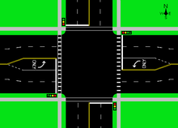

If you've ever been in a car, on a bus or even walked or biked in a city, you've seen traffic lights. It's garenteed. They are key components of busy streets and help all of us stay safe on the roads as drivers, passangers, and pedestrians. However, how do they do all of this? How do they keep us safe? Are they different across the world? I've made a model set of traffic lights to demostrate how they work.
Traffic lights are a very technical machine, involving a whole lot of code and circuits, not to mention enough electricity to kill you if you touched the wrong wire. What people see on the streets in Ontario are yellow coloured boxes hanging vertically above the road. with three or four circular lights inside of it. The top light is red, the middle light is amber (yellow), and the third light is green. If there is a fourth light, it is an arrow pointing either left or right that is either amber or green. The lights turn on in a cycle in this order: red, green, amber, red, etc. When the light is red, all cars in the lane associated with that light stop. A green light means all cars in the lane can go, and amber means that the light is going to go red soon, and cars should begin to slow down. Traffic lights are extremely useful at intersections. An interesection is when roads intersect at a right angle, making a cross. At an interesection, there are two sets of lights going in each direction. So, for example, there can be a light facing south, a light facing north, a light facing east and a light facing west, making it so there is a set of lights going north-south and another going east west, light in the diagram below.
When the east facing light is green, the west facing light will also be green for 35 seconds, however the north and south lights will both be red, and will remain red even while the E-W lights are amber for five seconds. There will be 5 second period where both sets of lights are red, before the N-S lights go green for 35 seconds, and the cycle repeats.
I know what you are thinking. Traffic lights are a huge inconvience to everyday life. We all know how bad rush hour traffic can be. However, the number one reason we even have traffic lights is to keep everyone safe and prevent accidents and fatalities caused by vechiles. Imagine going through an intersection with cars coming from all four directions at once. It would be difficult and dangerous for everyone. The traffic light system prevent these issues by creating a turn system where you can when the light is green, and must stop for red lights. This prevents many problems such as car accidents.
Of course, traffic lights must exist everywhere cars exist. So, they exist everywhere from right here in Ontario all across the world. A year ago, I went to a convention in Amsterdam called the Intertraffic (International Traffic) where company's around the world showed off their own technologies to the world. There were so many interesting things I saw there. But, you don't have to go halfway acr the world to see different types of traffic lights. In fact, if you cross into Quebec, already the traffic lights are horizontal instead of vertical light we have them. On those lights, the red light is on the left, followed by the amber and green lights on the right. These traffic lights can sometime have five different bulbs, allowing it to have multiple arrows at interesections. However, across the ocean in Ireland, the rules can be a lot more complicated. Though the general pattern and the meanings of the red, amber, and green lights are the same, there are a few complications such as the flashing amber light, where you may proceed only if it is safe to do so and, if appropriate, yield to other traffic. In Poland, red and yellow lights together displayed together mean lights are about to change to green and you should get ready to go but don't set off until the green light is on. Meanwhile, Japan has blue lights instead of green lights.